Chapter 6 Spatial Data and Maps
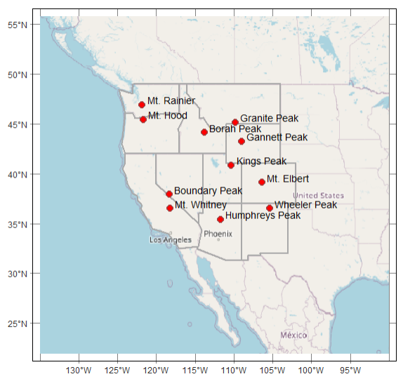
The Spatial section of this book adds the spatial dimension and geographic data science. Most environmental systems are significantly affected by location, so the geographic perspective is highly informative. In this chapter, we’ll explore the basics of
- building and using feature-based (vector) data using the
sf(simple features) package - raster data using the
terrapackage - some common mapping methods in
plotandggplot2
Especially for the feature data, which is built on a database model (with geometry as one variable), the tools we’ve been learning in dplyr and tidyr will also be useful to working with attributes.
Caveat: Spatial data and analysis is very useful for environmental data analysis, and we’ll only scratch the surface. Readers are encouraged to explore other resources on this important topic, such as:
- Geocomputation with R at https://geocompr.robinlovelace.net/
- Simple Features for R at https://r-spatial.github.io/sf/
- Spatial Data Science with R at https://rspatial.org
6.1 Spatial Data
Spatial data is data using a Cartesian coordinate system with x, y, z, and maybe more dimensions. Geospatial data is spatial data that we can map on our planet and relate to other geospatial data based on geographic coordinate systems (GCS) of longitude and latitude or known projections to planar coordinates like Mercator, Albers, or many others. You can also use local coordinate systems with the methods we’ll learn, to describe geometric objects or a local coordinate system to “map out” an archaeological dig or describe the movement of ants on an anthill, but we’ll primarily use geospatial data.
To work with spatial data requires extending R to deal with it using packages. Many have been developed, but the field is starting to mature using international open GIS standards.
sp (until recently, the dominant library of spatial tools)
- Includes functions for working with spatial data
- Includes
spplotto create maps - Also needs
rgdalpackage forreadOGR– reads spatial data frames - Earliest archived version on CRAN is 0.7-3, 2005-04-28, with 1.0 released 2012-09-30. Authors: Edzer Pebesma and Roger Bivand
sf (Simple Features)
- Feature-based (vector) methods
- ISO 19125 standard for GIS geometries
- Also has functions for working with spatial data, but clearer to use
- Doesn’t need many additional packages, though you may still need
rgdalinstalled for some tools you want to use - Replacing
spandspplotthough you’ll still find them in code - Works with ggplot2 and tmap for nice looking maps
- Cheat sheet and other information at https://r-spatial.github.io/sf/
- Earliest CRAN archive is 0.2 on 2016-10-26, 1.0 not until 2021-06-29
- Author: Edzer Pebesma
raster
- The established raster package for R, with version 1.0 from 2010-03-20, Author: Robert J. Hijmans (Professor of Environmental Science and Policy at UC Davis)
- Depends on
sp - CRAN: “Reading, writing, manipulating, analyzing and modeling of spatial data. The package implements basic and high-level functions for raster data and for vector data operations such as intersections. See the manual and tutorials on https://rspatial.org/ to get started.”
terra
- Intended to eventually replace
raster, by the same author (Hijmans), current version 1.6-7 2022-08-07; does not depend onsp, but includes Bivand and Pebesma as contributors - CRAN: “Methods for spatial data analysis with raster and vector data. Raster methods allow for low-level data manipulation as well as high-level global, local, zonal, and focal computation. The predict and interpolate methods facilitate the use of regression type (interpolation, machine learning) models for spatial prediction, including with satellite remote sensing data. Processing of very large files is supported. See the manual and tutorials on https://rspatial.org/terra/ to get started.”
6.1.1 Simple geometry building in sf
Simple Features (sf) includes a set of simple geometry building tools that use matrices or lists of matrices of XYZ (or just XY) coordinates (or lists of lists for multipolygon) as input, and each basic geometry type having single and multiple versions (Table 6.1). Note that sf functions have the pattern st_* (st means “space and time”).
| sf function | input |
|---|---|
| st_point() | numeric vector of length 2, 3, or 4, represent a single point |
| st_multipoint() | numeric matrix with points in rows |
| st_linestring() | numeric matrix with points in rows |
| st_multilinestring() | list of numeric matrices with points in rows |
| st_polygon() | list of numeric matrices with points in rows |
| st_multipolygon() | list of lists with numeric matrices |
6.1.1.1 Building simple sf geometries
We’ll build some simple geometries and plot them, just to illustrate the types of geometries. Try the following code.
6.1.1.2 Building geospatial points as sf columns (sfc)
The face-building example above is really intended for helping to understand the concept and isn’t really how we’d typically build data. For one thing, it doesn’t have a real coordinate system that can be reprojected into locations anywhere on the planet. And while it allows it, building an sfc from a mixture of geometry types (poin, linestring, and polygon) isn’t recommended for geospatial data.
See Geocomputation with R at https://geocompr.robinlovelace.net/ or https://r-spatial.github.io/sf/ for more details, but when building spatial data from scratch, we would need to follow this by building a simple feature geometry list column from the collection with st_sfc(). We’ll look at this using real geographic coordinates, building a generalized map of California and Nevada boundaries (and then later in the exercises, you’ll expand this to a map of the west.) We’ll use a shortcut to the coordinate referencing system (crs) by using a short numeric EPSG code (EPSG Geodetic Parameter Dataset (n.d.)), 4326, for the common geographic coordinate system (GCS) of latitude and longitude.
library(sf)
CA_matrix <- rbind(c(-124,42),c(-120,42),c(-120,39),c(-114.5,35),
c(-114.1,34.3),c(-114.7,33.4),c(-114.5,33),
c(-114.6,32.7),c(-117,32.5),c(-118.5,34),c(-120.5,34.5),
c(-122,36.5),c(-121.8,36.8),c(-122,37),c(-122.4,37.3),c(-122.5,37.8),
c(-123,38),c(-123.7,39),c(-124,40),c(-124.4,40.5),c(-124,41),c(-124,42))
NV_matrix <- rbind(c(-120,42),c(-114,42),c(-114,36),c(-114.2,36),
c(-114.4,36.2),c(-114.7,36),c(-114.5,35),c(-120,39),c(-120,42))
CA_list <- list(CA_matrix); NV_list <- list(NV_matrix)
CA_poly <- st_polygon(CA_list); NV_poly <- st_polygon(NV_list)
sfc_2states <- st_sfc(CA_poly,NV_poly,crs=4326) # crs=4326 specifies GCS
st_geometry_type(sfc_2states)## [1] POLYGON POLYGON
## 18 Levels: GEOMETRY POINT LINESTRING POLYGON MULTIPOINT ... TRIANGLENow that we have simple feature columns for two state polygons, let’s build a polyline of the Colorado River which forms part of the boundary of California and Nevada, so some of these vertices are copied from those.
CO_river = st_sfc(st_linestring(rbind(c(-114,36),c(-114.2,36),c(-114.4,36.2),
c(-114.7,36),c(-114.5,35),c(-114.1,34.3),c(-114.7,33.4),c(-114.5,33),
c(-114.6,32.7),c(-115.0,32.2),c(-114.8,31.8))),crs=4326)Then we’ll use the geom_sf() function in ggplot2 to create a map (Figure 6.1).
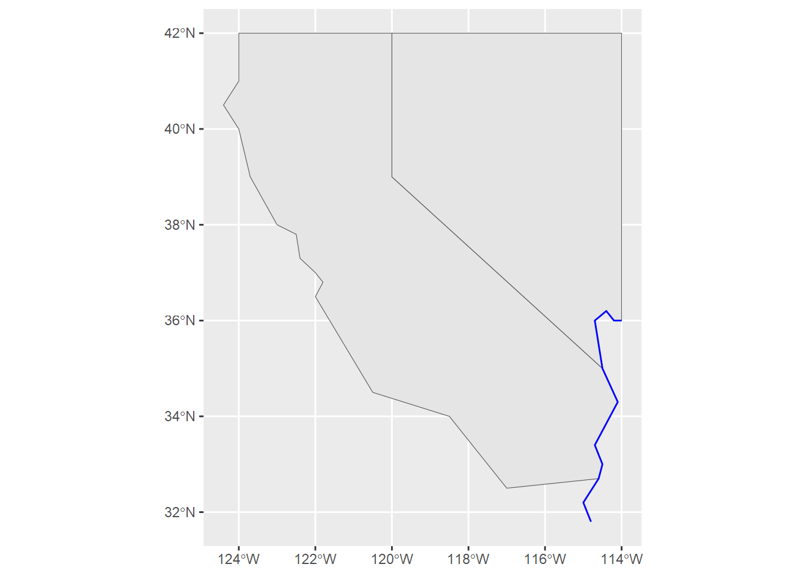
FIGURE 6.1: A simple ggplot2 map built from scratch with hard-coded data as simple feature columns
6.1.1.3 Building an sf class from sf columns.
So far, we’ve built an sfg (sf geometry) and then a collection of matrices in an sfc (sf column), and we were even able to make a map of it. But to be truly useful, we’ll want other attributes other than just where the feature is, so we’ll build an sf that has attributes, and that can also be used like a data frame – similar to a shapefile, since a data frame is like a database table .dbf. We’ll build one with the st_sf() function from attributes and geometry (Figure 6.2).
Note that the first argument for
st_sfdoes not have a name. If you check the usage with?st_sfyou’ll just see...for the first argument, and you simply are to provide “column elements to be binded into ansfobject”. In this caseattributesis simply listed there; don’t be tempted to be explicit and use something likedata=attributes.
attributes <- bind_rows(c(abb="CA", area=423970, pop=39.56e6),
c(abb="NV", area=286382, pop=3.03e6)) %>%
mutate(area=as.numeric(area),pop=as.numeric(pop))
twostates <- st_sf(attributes, geometry = sfc_2states)
river = st_sf(tribble(~name,"Colorado River"), geometry=CO_river)
ggplot(twostates) + geom_sf() + geom_sf_text(aes(label = abb)) +
geom_sf(data=river, col="blue") +
labs(x="",y="")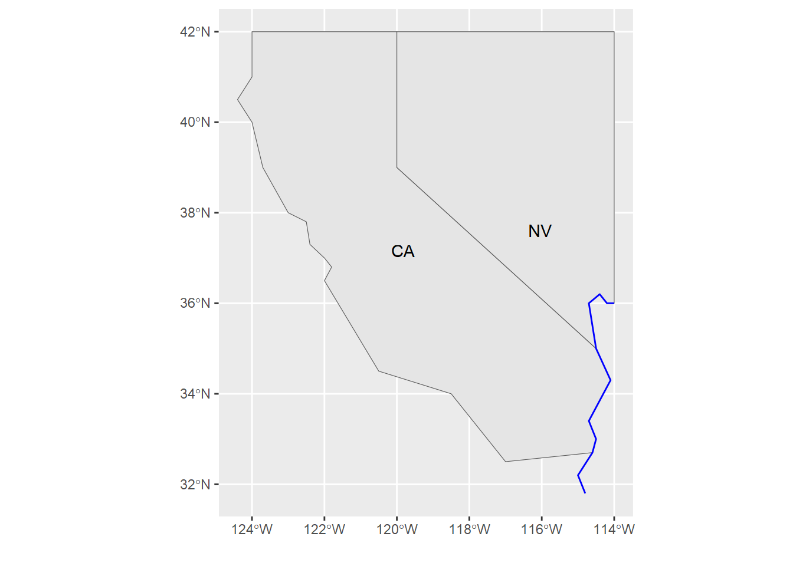
FIGURE 6.2: Using an sf class to build a map in ggplot2, displaying an attribute
Or we could let the plot system try to figure out what to do with it. To help it out a bit, we can select just one variable, for which we need to use the [] accessor (Figure 6.3). Try the $ accessor instead to see what you get, and consider why this might be.
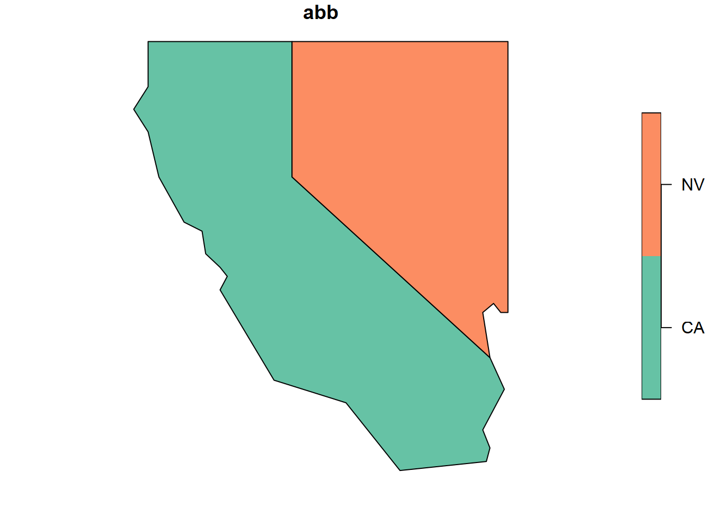
FIGURE 6.3: Base R plot of one attribute from two states
6.1.2 Building points from a data frame
We’re going to take a different approach with points, since if we’re building them from scratch they commonly come in the form of a data frame with x and y columns, so the st_as_sf is much simpler than what we just did with sfg and sfc data.
The sf::st_as_sf function is useful for a lot of things, and follows the convention of R’s many “as” functions: if it can understand the input as having “space and time” (st) data, it can convert it to an sf.
We’ll start by creating a data frame representing 12 Sierra Nevada (and some adjacent) weather stations, with variables entered as vectors, including attributes. The order of vectors needs to be the same for all, where the first point has index 1, etc.
sta <- c("OROVILLE","AUBURN","PLACERVILLE","COLFAX","NEVADA CITY","QUINCY",
"YOSEMITE","PORTOLA","TRUCKEE","BRIDGEPORT","LEE VINING","BODIE")
lon <- c(-121.55,-121.08,-120.82,-120.95,-121.00,-120.95,
-119.59,-120.47,-120.17,-119.23,-119.12,-119.01)
lat <- c(39.52,38.91,38.70,39.09,39.25,39.94,
37.75,39.81,39.33,38.26,37.96,38.21)
elev <- c(52,394,564,725,848,1042,
1225,1478,1775,1972,2072,2551)
tC <- c(10.7,9.7,9.2,7.3,6.7,4.0,
5.0,0.5,-1.1,-2.2,0.4,-4.4)
prec <- c(124,160,171,207,268,182,
169,98,126,41,72,40)To build the sf data, we start by building the data frame…
… then use the very handy sf::st_as_sf function to make an sf out of it, using the lon and lat as a source of coordinates (Figure 6.4).
wst <- st_as_sf(df, coords=c("lon","lat"), crs=4326)
ggplot(data=wst) + geom_sf(mapping = aes(col=elev))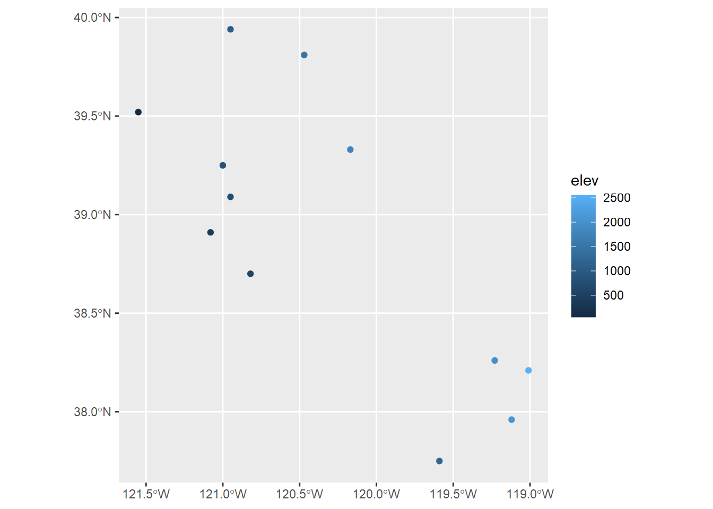
FIGURE 6.4: Points created from a dataframe with Simple Features
6.1.3 SpatVectors in terra
We’ll briefly look at another feature-based object format, the SpatVector from terra, which uses a formal S4 object definition that provides some advantages over S3 objects such as what’s in most of R, though I often prefer the simpler data frame structure of simple features in sf. See Hijmans (n.d.) for more about SpatVectors. We’ll use terra’s raster capabilities a lot more, but we’ll take a brief look at building and using a SpatVector.
We’ll start with the climate data from a selection of Sierra Nevada (and some adjacent) weather stations, created above, with variables sta, lon, lat, elev, tC, and prec entered as vectors.
Then we’ll build a SpatVector we’ll call station_pts from just the longitude and latitude vectors we just created:
Unlike other data sets which use a simple object model called S3, SpatVector data use the more formal S4 definition. SpatVectors have a rich array of properties and associated methods, which you can see in the Environment tab of RStudio, or access with @pnt. This is a good thing, but the str() function we’ve been using for S3 objects presents us with arguably too much information for easy understanding. But just by entering station_pts on the command line we get something similar to what str() does with S3 data, so this might be better for seeing a few key properties:
## class : SpatVector
## geometry : points
## dimensions : 12, 0 (geometries, attributes)
## extent : -121.55, -119.01, 37.75, 39.94 (xmin, xmax, ymin, ymax)
## coord. ref. :Note that there’s nothing listed for coord. ref. meaning the coordinate referencing system (CRS). We’ll look at this more below, but for now let’s change the code a bit to add this information using the PROJ-string method:
Of the many methods associated with these objects, one example is getting with geom():
## geom part x y hole
## [1,] 1 1 -121.55 39.52 0
## [2,] 2 1 -121.08 38.91 0
## [3,] 3 1 -120.82 38.70 0
## [4,] 4 1 -120.95 39.09 0
## [5,] 5 1 -121.00 39.25 0
## [6,] 6 1 -120.95 39.94 0
## [7,] 7 1 -119.59 37.75 0
## [8,] 8 1 -120.47 39.81 0
## [9,] 9 1 -120.17 39.33 0
## [10,] 10 1 -119.23 38.26 0
## [11,] 11 1 -119.12 37.96 0
## [12,] 12 1 -119.01 38.21 0Let’s add the attributes to the original lonlat matrix to build a SpatVector with attributes we can see in a basic plot (Figure 6.5).
df <- data.frame(sta,elev,tC,prec)
clim <- vect(lonlat, atts=df, crs="+proj=longlat +datum=WGS84")
clim## class : SpatVector
## geometry : points
## dimensions : 12, 4 (geometries, attributes)
## extent : -121.55, -119.01, 37.75, 39.94 (xmin, xmax, ymin, ymax)
## coord. ref. : +proj=longlat +datum=WGS84 +no_defs
## names : sta elev tC prec
## type : <chr> <num> <num> <num>
## values : OROVILLE 52 10.7 124
## AUBURN 394 9.7 160
## PLACERVILLE 564 9.2 171
## ...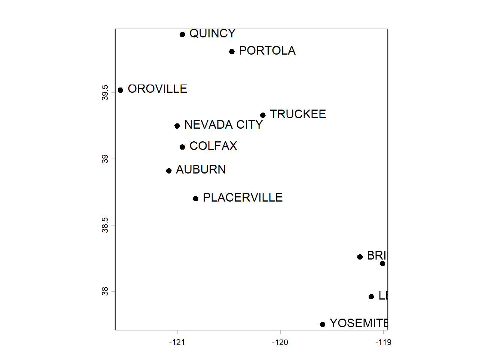
FIGURE 6.5: Simple plot of SpatVector point data with labels (note that overlapping labels may result, as seen here)
The SpatVector format looks promising, and is increasingly supported in mapping programs like tmap, but sometimes you may want the simpler data frame + geometry structure of the sf model. Fortunately, you can use the sf::sf_as_sf function to convert it, just as you can create a SpatVector from an sf with the terra::vect function. The following code demonstrates both, with a ggplot2 map of sf data (Figure 6.6) and then a base R plot map with SpatVector data (Figure 6.7).
## Classes 'sf' and 'data.frame': 12 obs. of 5 variables:
## $ sta : chr "OROVILLE" "AUBURN" "PLACERVILLE" "COLFAX" ...
## $ elev : num 52 394 564 725 848 ...
## $ tC : num 10.7 9.7 9.2 7.3 6.7 4 5 0.5 -1.1 -2.2 ...
## $ prec : num 124 160 171 207 268 182 169 98 126 41 ...
## $ geometry:sfc_POINT of length 12; first list element: 'XY' num -121.5 39.5
## - attr(*, "sf_column")= chr "geometry"
## - attr(*, "agr")= Factor w/ 3 levels "constant","aggregate",..: NA NA NA NA
## ..- attr(*, "names")= chr [1:4] "sta" "elev" "tC" "prec"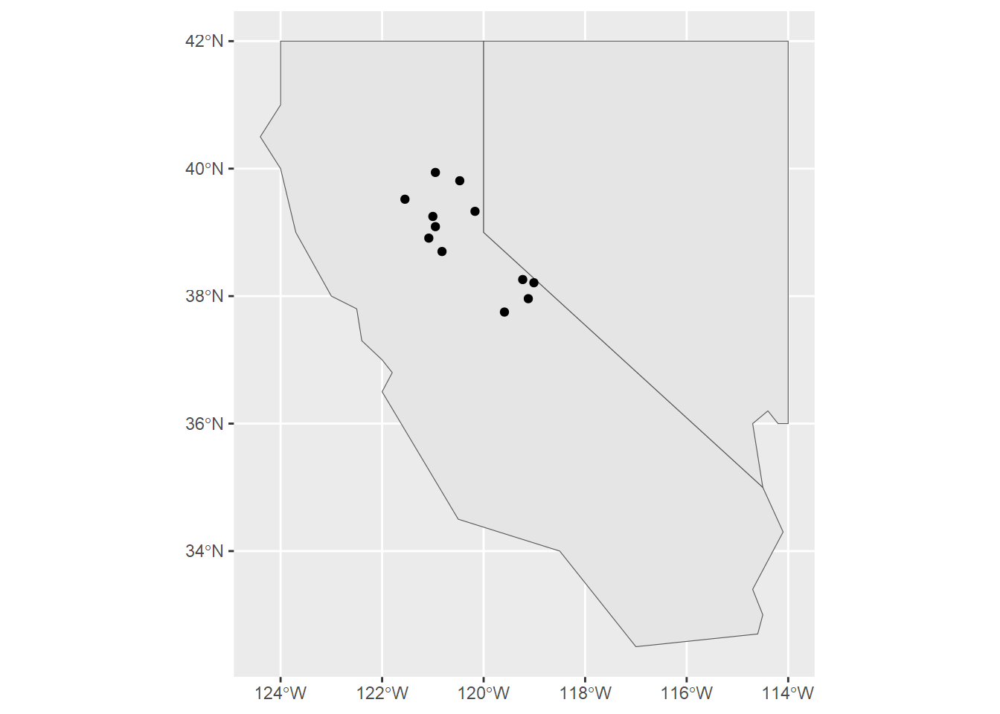
FIGURE 6.6: ggplot of twostates and stations
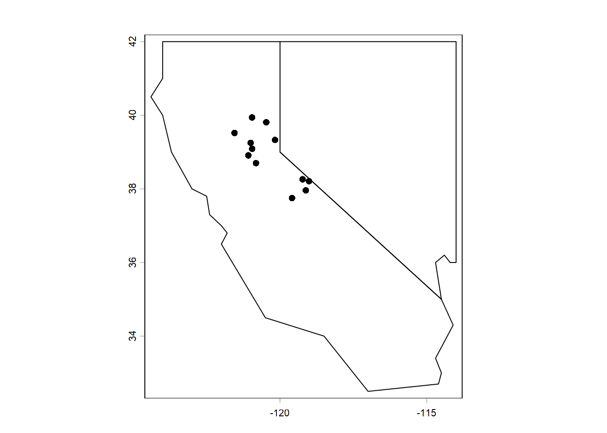
FIGURE 6.7: Base R plot of twostates and stations SpatVectors
## class : SpatVector
## geometry : polygons
## dimensions : 2, 3 (geometries, attributes)
## extent : -124.4, -114, 32.5, 42 (xmin, xmax, ymin, ymax)
## coord. ref. : lon/lat WGS 84 (EPSG:4326)
## names : abb area pop
## type : <chr> <num> <num>
## values : CA 423970 3.956e+07
## NV 286382 3.03e+066.1.4 Creating features from shapefiles
Both sf’s st_read and terra’s vect read the open-GIS shapefile format developed by Esri for points, polylines, and polygons. You would normally have shapefiles (and all the files that go with them – .shx, etc.) stored on your computer, but we’ll access one from the igisci external data folder, and use that ex() function we used earlier with CSVs. Remember that we could just include that and the library calls just once at the top of our code like this…
If we just send a spatial dataset like an sf spatial data frame to the plot system, it will plot all of the variables by default (Figure 6.8).
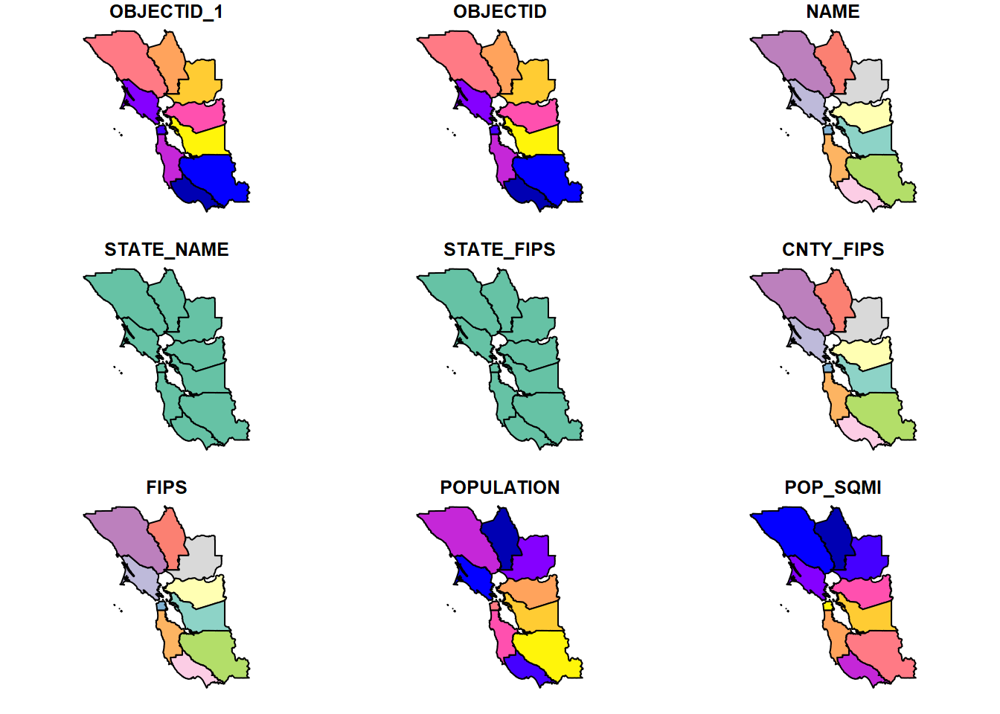
FIGURE 6.8: A simple plot of polygon data by default shows all variables
But with just one variable, of course, it just produces a single map (Figure 6.9).
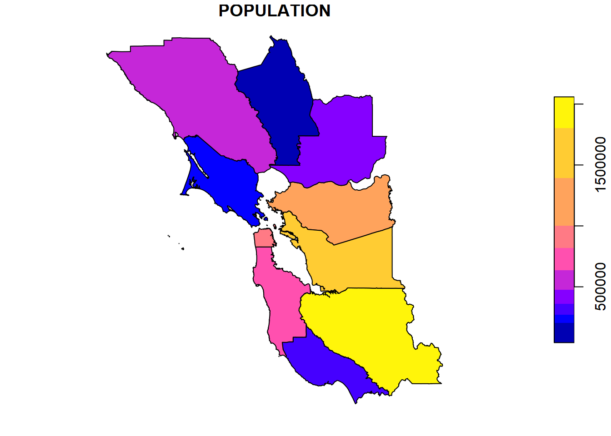
FIGURE 6.9: A single map with a legend is produced when a variable is specified
Notice that in the above map, we used the [] accessor. Why didn’t we use the simple $ accessor? Remember that plot() figures out what to do based on what you provide it. And there’s an important difference in what you get with the two accessors, which we can check with class():
## [1] "sf" "data.frame"## [1] "numeric"You might see that what you get with plot(BayAreaCounties$POPULATION) is not very informative, since the object is just a numeric vector, while using [] accessor returns a spatial dataframe.
There’s a lot more we could do with the base R plot system, so we’ll learn some of these before exploring what we can do with ggplot2, tmap, and leaflet. But first we need to learn more about building geospatial data.
We’ll use st_as_sf() for that, but we’ll need to specify the coordinate referencing system (CRS), in this case GCS. We’ll only briefly explore how to specify the CRS here. For a thorough coverage, please see Lovelace et al. (2019).
6.2 Coordinate Referencing Systems
Before we try the next method for bringing in spatial data – converting data frames – we need to look at coordinate referencing systems (CRS). First, there are quite a few, with some spherical like the geographic coordinate system (GCS) of longitude and latitude, and others planar projections of GCS using mathematically defined projections such as Mercator, Albers Conformal Conic, Azimuthal, etc., and including widely used government-developed systems such as UTM (universal transverse mercator) or state plane. Even for GCS, there are many varieties since geodetic datums can be chosen, and for very fine resolution work where centimetres or even millimetres matter, this decision can be important (and tectonic plate movement can play havoc with tying it down.)
There are also multiple ways of expressing the CRS, either to read it or to set it. The full specification of a CRS can be displayed for data already in a CRS, with either sf::st_crs or terra::crs.
## Coordinate Reference System:
## User input: WGS 84
## wkt:
## GEOGCRS["WGS 84",
## DATUM["World Geodetic System 1984",
## ELLIPSOID["WGS 84",6378137,298.257223563,
## LENGTHUNIT["metre",1]]],
## PRIMEM["Greenwich",0,
## ANGLEUNIT["degree",0.0174532925199433]],
## CS[ellipsoidal,2],
## AXIS["latitude",north,
## ORDER[1],
## ANGLEUNIT["degree",0.0174532925199433]],
## AXIS["longitude",east,
## ORDER[2],
## ANGLEUNIT["degree",0.0174532925199433]],
## ID["EPSG",4326]]… though there are other ways to see the crs in shorter forms, or its individual properties :
## [1] "+proj=longlat +datum=WGS84 +no_defs"## [1] "degree"## [1] 4326There’s also
st_crs()$Wkt, which you should try, but it creates a long, continuous string that goes off the page, so doesn’t work for the book formatting.
So, to convert the sierra data into geospatial data with st_as_sf, we might either do it with the reasonably short PROJ format …
GCS <- "+proj=longlat +datum=WGS84 +no_defs +ellps=WGS84 +towgs84=0,0,0"
wsta = st_as_sf(sierraFeb, coords = c("LONGITUDE","LATITUDE"), crs=GCS)… or with the even shorter EPSG code (which we can find by Googling), which can either be provided as text "epsg:4326" or often just the number, which we’ll use next.
6.3 Creating sf Data from Data Frames
As we saw earlier, if your data frame has geospatial coordinates like LONGITUDE and LATITUDE …
## [1] "STATION_NAME" "COUNTY" "ELEVATION" "LATITUDE"
## [5] "LONGITUDE" "PRECIPITATION" "TEMPERATURE"… we have what we need to create geospatial data from it. Earlier we read in a series of vectors built in code with c() functions from 12 selected weather stations; this time we’ll use a data frame that has all of the Sierra Nevada weather stations (Figure 6.10).
wsta <- st_as_sf(sierraFeb, coords = c("LONGITUDE","LATITUDE"), crs=4326)
ggplot(data=wsta) + geom_sf(aes(col=ELEVATION))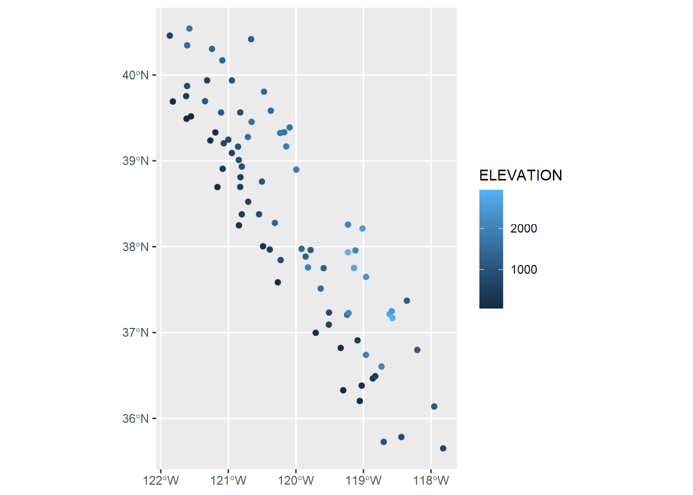
FIGURE 6.10: Points created from data frame with coordinate variables
6.3.1 Removing geometry
There are many instances where you want to remove geometry from a sf data frame.
Some R functions run into problems with geometry and produce confusing error messages, like “non-numeric argument”
To work with an sf data frame in a non-spatial way
One way to remove geometry :
myNonSFdf <- mySFdf %>% st_set_geometry(NULL)
6.4 Base R’s plot() with terra
As we’ve seen in the examples above, the venerable plot system in base R can often do a reasonable job of displaying a map. The terra package extends this a bit by providing tools for overlaying features on other features (or rasters using plotRGB), so it’s often easy to use (Figure 6.11).
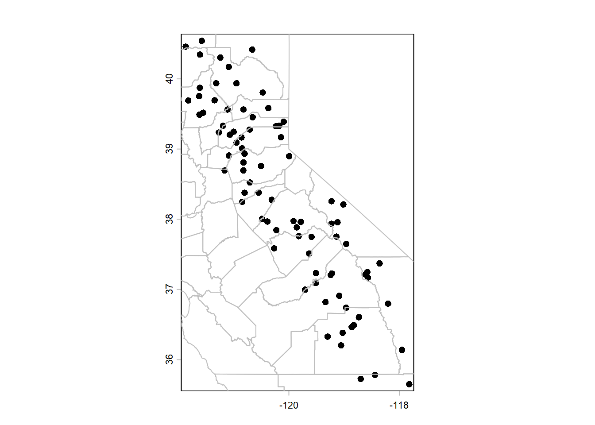
FIGURE 6.11: Plotting SpatVector data with base R plot system
Note that we converted the sf data to terra SpatVector data with vect(), but the base R plot system can work with either sf data or SpatVector data from terra.
The lines, points, and polys functions (to name a few – see ?terra and look at the Plotting section) will add to an existing plot. Alternatively, we could use plot’s add=TRUE parameter to add onto a plot that we’ve previously scaled with a plot. In this case, we’ll cheat and just use the first plot to set the scaling but then cover over that plot with other plots (Figure 6.12).
library(terra)
plot(vect(wsta[1])) # simple way of establishing the coordinates
# Then will be covered by the following:
plot(vect(CA_counties), col="lightgray", add=TRUE)
plot(vect(wsta), col="red", add=TRUE)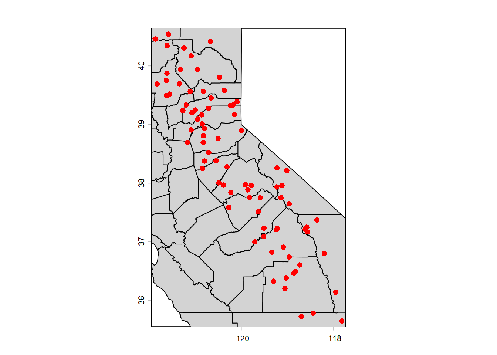
FIGURE 6.12: Features added to the map using the base R plot system
6.4.1 Using maptiles to create a basemap
For vector data, it’s often nice to display over a basemap by accessing raster tiles that are served on the internet by various providers. We’ll use the maptiles package to try displaying the CA and NV boundaries we created earlier. The maptiles package supports a variety of basemap providers, and I’ve gotten the following to work: "OpenStreetMap", "Stamen.Terrain", "Stamen.TerrainBackground", "Esri.WorldShadedRelief", "Esri.NatGeoWorldMap", "Esri.WorldGrayCanvas", "CartoDB.Positron", "CartoDB.Voyager", "CartoDB.DarkMatter", "OpenTopoMap", "Wikimedia", however, they don’t work at all scales and locations – you’ll often see an Error in grDevices, if so then try another provider – the default "OpenStreetMap" seems to work the most reliably (Figure 6.13).
library(terra); library(maptiles)
# Get the raster that covers the extent of CANV:
calnevaBase <- get_tiles(twostates, provider="Esri.NatGeoWorldMap") #OpenTopoMap")
st_crs(twostates)$epsg## [1] 4326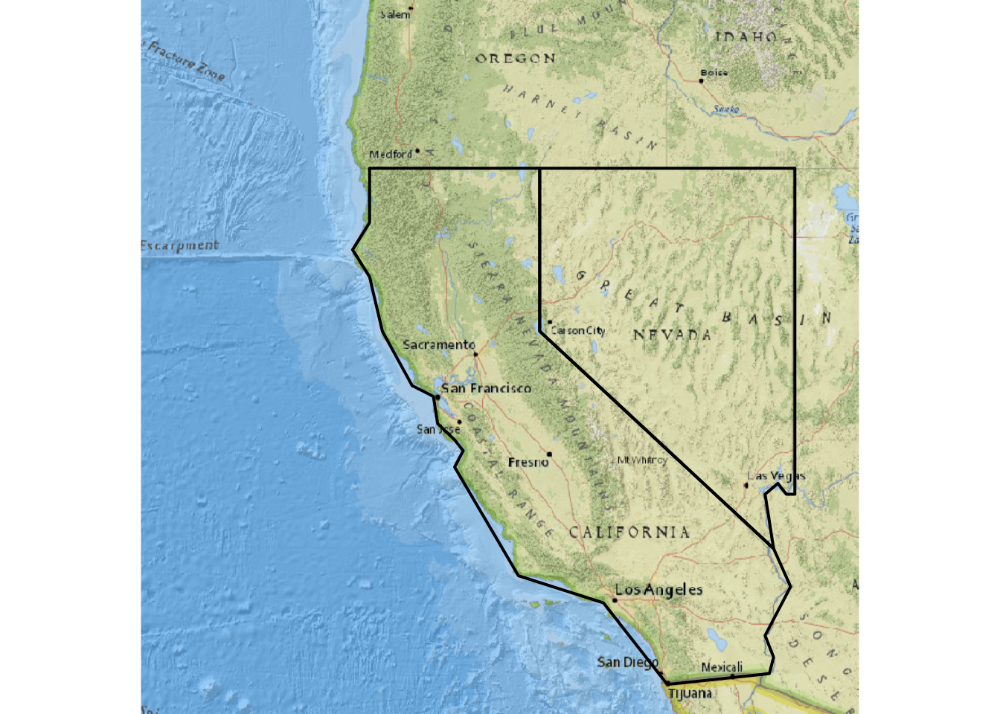
FIGURE 6.13: Using maptiles for a base map
In the code above, we can also see the use of terra functions and parameters. Learn more about these by reviewing the code and considering:
terra functions: The terra::vect() function creates a SpatVector that works with terra::lines to display the boundary lines in plot(). (More on terra later, in the Raster section.)
parameters: Note the use of the parameter lwd (line width) from the plot system. This is one of many parameter settings described in ?par. It defaults to 1, so 2 makes it twice as thick. You could also use lty (line type) to change it to a dashed line with lty="dashed" or lty=2.
And for the sierraFeb data, we’ll start with st_as_sf and the coordinate system (4326 for GCS), then use a maptiles basemap again, and the terra::points method to add the points (Figure 6.14).
library(terra); library(maptiles)
sierraFebpts <- st_as_sf(sierraFeb, coords = c("LONGITUDE", "LATITUDE"), crs=4326)
sierraBase <- get_tiles(sierraFebpts)
st_crs(sierraFebpts)$epsg## [1] 4326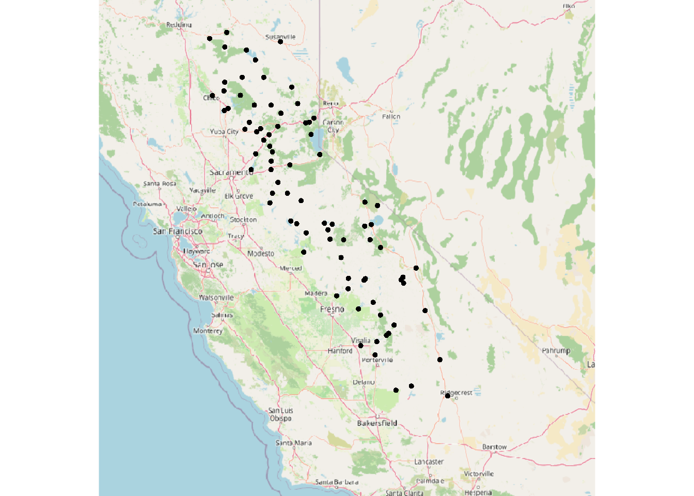
FIGURE 6.14: Converted sf data for map with tiles
We’ll learn another way to use basemaps in tmap, later in the chapter, but it uses the same source of basemaps.
6.5 Raster data
Simple Features are feature-based, of course, so it’s not surprising that sf doesn’t have support for rasters. So we’ll want to either use the raster package or its imminent replacement, terra (which also has vector methods – see Hijmans (n.d.) and Lovelace et al. (2019)), and I’m increasingly using terra since it has some improvements that I find useful.
6.5.1 Building rasters
We can start by building one from scratch. The terra package has a rast() function for this, and creates an S4 (as opposed to the simpler S3) object type called a SpatRaster.
library(terra)
new_ras <- rast(ncol = 12, nrow = 6,
xmin = -180, xmax = 180, ymin = -90, ymax = 90,
vals = 1:72)Formal S4 objects like SpatRasters have many associated properties and methods. To get a sense, type into the console new_ras@pnt$ and see what suggestions you get from the autocomplete system. To learn more about them, see Hijmans (n.d.), but we’ll look at a few of the key properties by simply entering the SpatRaster name in the console.
## class : SpatRaster
## size : 6, 12, 1 (nrow, ncol, nlyr)
## resolution : 30, 30 (x, y)
## extent : -180, 180, -90, 90 (xmin, xmax, ymin, ymax)
## coord. ref. : lon/lat WGS 84 (CRS84) (OGC:CRS84)
## source(s) : memory
## name : lyr.1
## min value : 1
## max value : 72- The
nrowandncoldimensions should be familiar, and thenlyrtells us that this raster has a single layer (or band as they’re referred to with imagery), and it gives it the namelyr.1. - The resolution is what you get when you divide 360 (degrees of longitude) by 12 and 180 (degrees of latitude) by 6, and the extent is what we entered to create it.
- But how does it know that these are degrees of longitude and latitude, as it appears to from the
coord. ref.property? The author of this tool seems to let it assume GCS if it doesn’t exceed the limits of the planet: -180 to +180 longitude and -90 to +90 latitude. - The source is in memory, since we didn’t read it from a file, but entered it directly. New rasters we might create from raster operations will also be in memory.
- The minimum and maximum values are what we used to create it.
The name lyr.1 isn’t very useful, so let’s change the name with the names function, and then access the name with a @pnt property (you could also use names(new_ras) to access it, but I thought it might be useful to see the @pnt in action.)
## class : SpatRaster
## size : 6, 12, 1 (nrow, ncol, nlyr)
## resolution : 30, 30 (x, y)
## extent : -180, 180, -90, 90 (xmin, xmax, ymin, ymax)
## coord. ref. : lon/lat WGS 84 (CRS84) (OGC:CRS84)
## source(s) : memory
## name : world30deg
## min value : 1
## max value : 72Simple feature data or SpatVectors can be plotted along with rasters using terra’s lines, polys, or points functions. Here we’ll use the twostates sf we created earlier (make sure to run that code again if you need it). Look closely at the map for our two states (Figure 6.15).
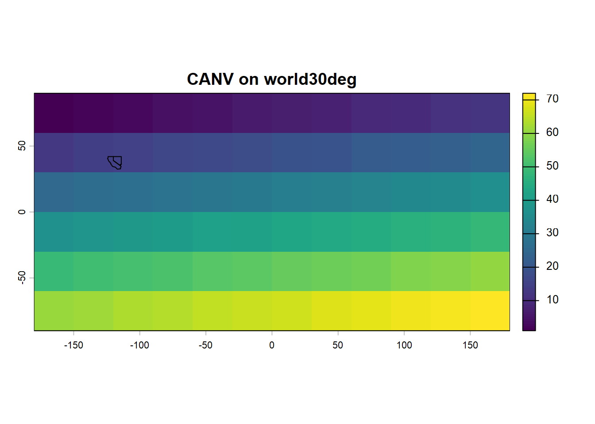
FIGURE 6.15: Simple plot of a worldwide SpatRaster of 30-degree cells, with SpatVector of CA and NV added
6.5.2 Vector to raster conversion
To convert rasters to vectors requires having a template raster with the desired cell size and extent, or an existing raster we can use as a template – we ignore what the values are – such as elev.tif in the following example (Figure 6.16):
streams <- vect(ex("marbles/streams.shp"))
elev <- rast(ex("marbles/elev.tif"))
streamras <- rasterize(streams,elev)
plot(streamras, col="blue")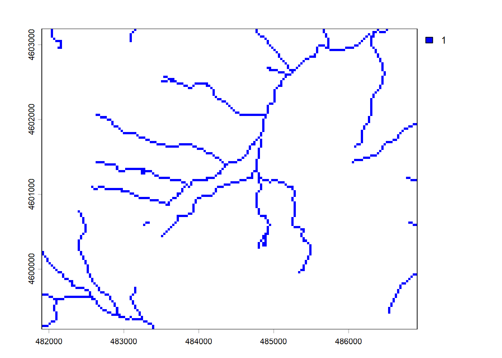
FIGURE 6.16: Stream raster converted from stream features, with 30 m cells from an elevation raster template
6.5.2.1 What if we have no raster to use as a template?
In the above process, we referenced elev essentially as a template to get a raster structure and crs to use. But what if we wanted to do the conversion and we didn’t have a raster to use as a template? We’d need to create a raster, specifying the cell size and the extent (xmin, xmax, ymin, ymax).
If you know those extent values, you could start from scratch. But we’ll look at a common situation where we have existing features, from the streams.shp we are wishing to rasterize…
## class : SpatVector
## geometry : lines
## dimensions : 48, 8 (geometries, attributes)
## extent : 481903.6, 486901.9, 4599199, 4603200 (xmin, xmax, ymin, ymax)
## source : streams.shp
## coord. ref. : NAD83 / UTM zone 10N (EPSG:26910)
## names : FNODE_ TNODE_ LPOLY_ RPOLY_ LENGTH STREAMS_ STREAMS_ID Shape_Leng
## type : <num> <num> <num> <num> <num> <num> <num> <num>
## values : 5 6 4 4 269.284 1 1 269.284
## 2 7 2 2 153.684 2 5 153.684
## 8 1 2 2 337.887 3 36 337.887
## ...… and in code we could pull out the four extent properties with the ext() function, and use that also to work out the aspect ratio and (assuming that we know we want a raster cell size of 30 m based on the crs being in UTM metres) we can come up with the parameters (with integer numbers of columns and rows) for creating the raster template.
XMIN <- ext(streams)$xmin
XMAX <- ext(streams)$xmax
YMIN <- ext(streams)$ymin
YMAX <- ext(streams)$ymax
aspectRatio <- (YMAX-YMIN)/(XMAX-XMIN)
cellSize <- 30
NCOLS <- as.integer((XMAX-XMIN)/cellSize)
NROWS <- as.integer(NCOLS * aspectRatio)Then we use those parameters to create the template, also borrowing the crs from the streams layer.
templateRas <- rast(ncol=NCOLS, nrow=NROWS,
xmin=XMIN, xmax=XMAX, ymin=YMIN, ymax=YMAX,
vals=1, crs=crs(streams))Finally we can do something similar to original example, but with the template instead of elev as reference for the vector-raster conversion. The result will be identical to what we saw above.
Note that if you knew of a reference raster, you can also look at its properties with
## class : SpatRaster
## size : 134, 167, 1 (nrow, ncol, nlyr)
## resolution : 30, 30 (x, y)
## extent : 481905, 486915, 4599195, 4603215 (xmin, xmax, ymin, ymax)
## coord. ref. : NAD83 / UTM zone 10N (EPSG:26910)
## source : elev.tif
## name : elev
## min value : 1336
## max value : 2260and use or modify those properties to manually create a template raster, with code something like:
templateRas <- rast(ncol=167, nrow=134,
xmin=481905, xmax=486915, ymin=4599195, ymax=4603215,
vals=1, crs="EPSG:26910")The purpose here is just to show how we can create and use a raster template. How you define your raster template will depend on the extent and scale of your data, and if you have other rasters (like elev above) you want to match with, you may want to use it as a template as we did first.
6.5.2.2 Plotting some existing downloaded raster data
Let’s plot some Shuttle Radar Topography Mission (SRTM) elevation data for the Virgin River Canyon at Zion National Park (Figure ??), from Jakub Nowosad’s spDataLarge repository, which we’ll need to first install with:
install.packages("spDataLarge", repos = "https://geocompr.r-universe.dev")6.6 ggplot2 for Maps
The Grammar of Graphics is the gg of ggplot.
- Key concept is separating aesthetics from data
- Aesthetics can come from variables (using aes()setting) or be constant for the graph
Mapping tools that follow this lead
- ggplot, as we have seen, and it continues to be enhanced (Figure 6.17)
- tmap (Thematic Maps) https://github.com/mtennekes/tmap Tennekes, M., 2018, tmap: Thematic Maps in R, Journal of Statistical Software 84(6), 1-39

FIGURE 6.17: simple ggplot map
Try ?geom_sf and you’ll find that its first parameter is mapping with aes() by default. The data property is inherited from the ggplot call, but commonly you’ll want to specify data=something in your geom_sf call.
Another simple ggplot, with labels
Adding labels is also pretty easy using aes() (Figure 6.18).

FIGURE 6.18: labels added
And now with fill color, repositioned legend, and no “x” or “y” labels
The x and y labels are unnecessary since the graticule is provided, and for many maps there’s a better place to put the legend than what happens by default – for California’s shape, the legend goes best in Nevada (Figure 6.19). We’ll also pick a color scheme using scale_fill_gradient to specify the darkest color for high values, which corresponds to a cartographic figure-ground contrast rule.
ggplot(CA_counties) + geom_sf(aes(fill=MED_AGE)) +
geom_sf_text(aes(label = NAME), col="white", size=1.5) +
scale_fill_gradient(high = "darkslategray",low= "darkslategray3") +
theme(legend.position = c(0.8, 0.8)) +
labs(x="",y="")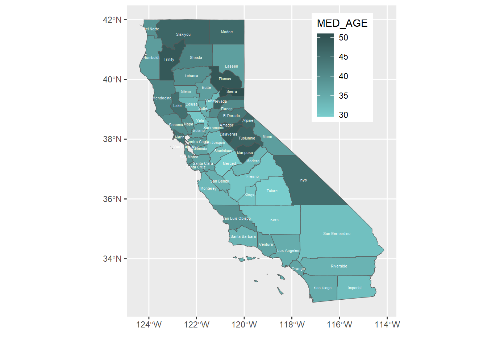
FIGURE 6.19: repositioned legend
Map in ggplot2, zoomed into two counties
We can zoom into two counties by accessing the extent of an existing spatial dataset using st_bbox() (Figure 6.20).
library(tidyverse); library(sf); library(igisci)
census <- st_make_valid(BayAreaTracts) %>% #st_make_valid not needed ?
filter(CNTY_FIPS %in% c("013", "095"))
TRI <- read_csv(ex("TRI/TRI_2017_CA.csv")) %>%
st_as_sf(coords = c("LONGITUDE", "LATITUDE"), crs=4326) %>%
st_join(census) %>%
filter(CNTY_FIPS %in% c("013", "095"),
(`5.1_FUGITIVE_AIR` + `5.2_STACK_AIR`) > 0)
bnd = st_bbox(census)
ggplot() +
geom_sf(data = BayAreaCounties, aes(fill = NAME)) +
geom_sf(data = census, color="grey40", fill = NA) +
geom_sf(data = TRI) +
coord_sf(xlim = c(bnd[1], bnd[3]), ylim = c(bnd[2], bnd[4])) +
labs(title="Census Tracts and TRI air-release sites") +
theme(legend.position = "none")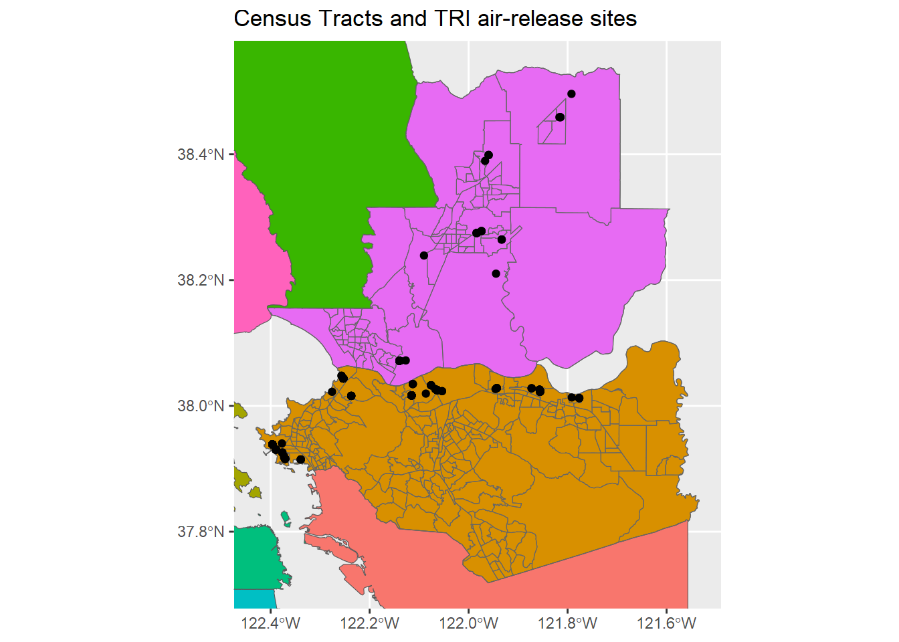
FIGURE 6.20: Using bbox to zoom into two counties
6.6.1 Rasters in ggplot2
Raster display in ggplot2 is currently a little awkward, as are rasters in general in the world of database-centric GIS where rasters don’t comfortably sit.
We can use a trick: converting rasters to a grid of points, to then be able to create Figure 6.21.
library(igisci)
library(tidyverse)
library(sf)
library(terra)
elevation <- rast(ex("marbles/elev.tif"))
trails <- st_read(ex("marbles/trails.shp"))
elevpts <- st_as_sf(as.points(elevation))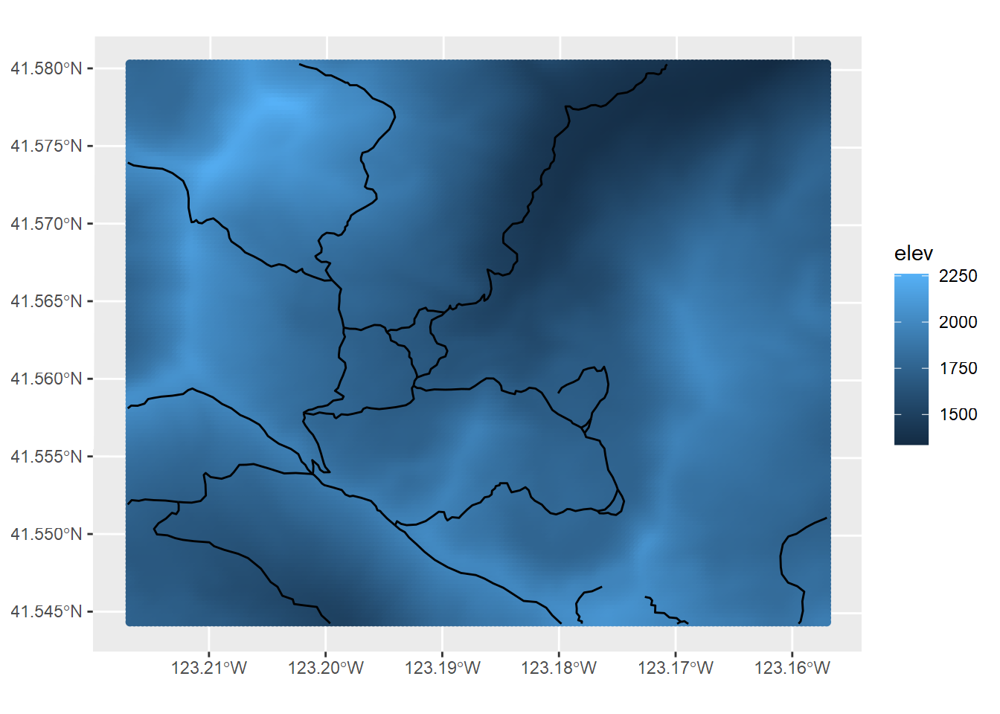
FIGURE 6.21: Rasters displayed in ggplot by converting to points
Note that the raster name stored in the elevation@pnt$names property is derived from the original source raster elev.tif, not from the object name we gave it, so we needed to specify elev for the variable to color from the resulting point features.
## [1] "elev"6.7 Using bounding boxes to zoom to the extent of data layers (in any mapping package)
Bounding box functions like st_bbox are important tools for zooming into the area of interest. Another one we’ll use is tmaptools::bb(), thus part of the tmaptools package that is associated with the tmap mapping package we’ll look at next.
library(sf); library(tmaptools); library(igisci); library(tidyverse)
trails <- st_read(ex("marbles/trails.shp"))
bbTrails <- bb(trails)They produce the same thing …
## [1] TRUE… and both include the crs of the data set …
## 'bbox' Named num [1:4] 481904 4599197 486902 4603200
## - attr(*, "names")= chr [1:4] "xmin" "ymin" "xmax" "ymax"
## - attr(*, "crs")=List of 2
## ..$ input: chr "NAD83 / UTM zone 10N"
## ..$ wkt : chr "PROJCRS[\"NAD83 / UTM zone 10N\",\n BASEGEOGCRS[\"NAD83\",\n DATUM[\"North American Datum 1983\",\n "| __truncated__
## ..- attr(*, "class")= chr "crs"… but currently there’s at least one advantage of tmaptools::bb(): the ext parameter let’s you add a bit to the extent to allow the map to have some extra border, with 1 being the default, and a 10% increase being 1.1, etc. We’ll see the effect in some later maps.
## xmin ymin xmax ymax
## 481903.8 4599196.5 486901.9 4603200.0## xmin ymin xmax ymax
## 481653.9 4598996.3 487151.8 4603400.26.8 tmap
The tmap package provides some nice cartographic capabilities. I’m increasingly using it for creating maps. We’ll learn some of its capabilities, but for more thorough coverage, see the “Making maps with R” section of Geocomputation with R (Lovelace et al. (2019)).
In addition to what we’ll cover here, you should also see the chapter on Making Maps https://r.geocompx.org/adv-map in Lovelace, Nowosad and Muenchow (2025) Geocomputation with R.
The basic building block is tm_shape(data) followed by various layer elements, such as tm_polygons(). The tm_shape function can work with either features or rasters.
But we’ll make a better map (Figure 6.22) by inserting a graticule before filling the polygons, then use tm_layout for some useful cartographic settings: make the background light blue and avoid excessive inner margins.
Note that the inner.margins are set close to zero. This makes a better looking border, without extra non-existing border stuff showing. Setting to zero would however create an error, at least with this bbox.
library(spData); library(tmap); library(sf)
bounds <- st_bbox(world)
marg <- 0.0001
tm_graticules() +
tm_shape(world) + tm_polygons() + # , bbox=bounds
tm_layout(bg.color="lightblue", inner.margins=marg)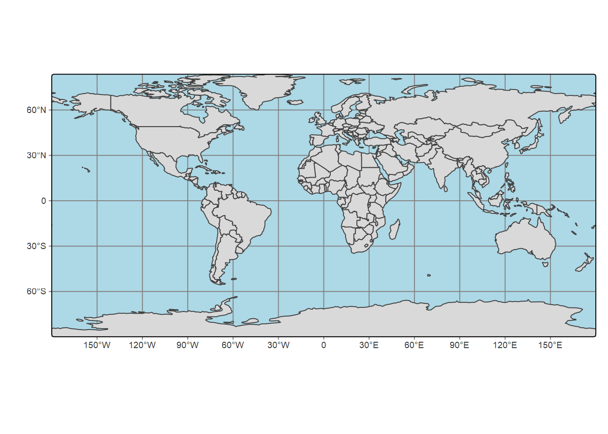
FIGURE 6.22: tmap with graticule
Though it’s not required, I like to start with
tm_graticule, then the firsttm_shapeis indented, and then I follow that indentation standard, with each draw function (e.g.tm_polygons) applied to that shape either on the same line or indented further from thetm_shape.
Experiment by leaving settings out to see the effect, and explore other options with
?tm_layout, etc. The tmap package has a wealth of options, just a few of which we’ll explore. For instance, we might want to use a different map projection than the default.
6.8.1 Color
As with plot and ggplot2, we can reference a variable to provide a range of colors for features we’re plotting, such as coloring polygon fills (tm_fill is a variant of tm_polygons that only fills) to create a choropleth map (Figure 6.23). In tmap, this is part of the concept of “Visual variables”. We’ll cover a bit about these, but see the “Making maps with R” chapter of Geocomputation with R (https://r.geocompx.org/) for more on this and tmap in general.
Color scales are important to understand, and tmap4 makes use of colors in the c4a system, best seen by running cols4all::c4a_gui(), which will run a Shiny app displaying the various options. Note that nothing else will run while this is in force, but you can also open in a browser.
library(sf); library(igisci); library(tmap)
tm_graticules(col="gray95") + # #e5e7e9") +
tm_shape(BayAreaTracts) +
tm_fill(fill = "MED_AGE", fill.scale=tm_scale(values="oranges"),
fill.legend=tm_legend(position=tm_pos_in("left","bottom"),
bg.color="white")) +
tm_shape(BayAreaCounties) +
tm_borders(col_alpha=0.2) +
tm_layout(bg.color = "gray90")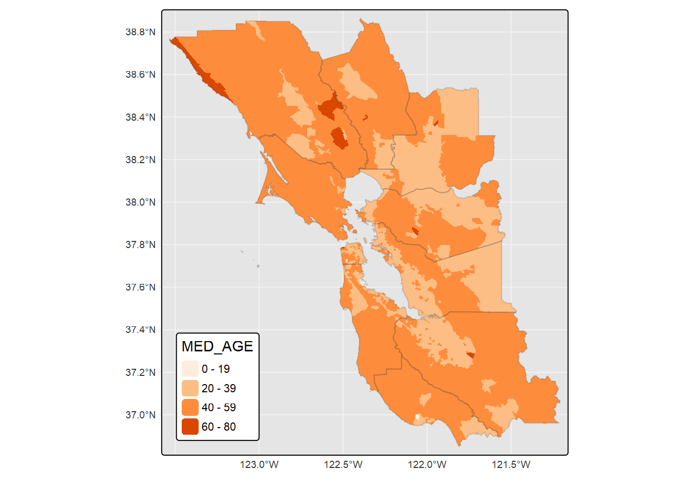
FIGURE 6.23: tmap fill colored by variable
Note the legend formatting applied to position within the frame and the use of a background color. The continuous scale used here is from the
brewerset, which you can explore atcols4all::c4a_gui()by selecting the a sequential palette type and look through thebrewerlistings. They include single color ranges like “greens”, “purples”, “blues”, etc., or ones that range from colors like yellow to green, like “yl_gn”, while still progressing from light to dark. We also used simple R colors.
Categorical Fill
There are many choices of categorical color palettes you can explore using cols4all::c4a_gui(), which allows you to set the number of colors you want and find many good options ranging from bold to subdued. For the 10-county greater Bay Area, the “tableau.miller_stone” looks appealing, so we’ll try it (6.24). We’ll also go without a frame for a legend placed outside.
library(sf); library(igisci); library(tmap)
tm_graticules(col="gray95") +
tm_shape(BayAreaCounties) +
tm_polygons(fill="NAME",
fill.scale=tm_scale_categorical(values="tableau.miller_stone"),
fill.legend=tm_legend(frame=F,title="County")) +
tm_layout(bg.color = "gray90")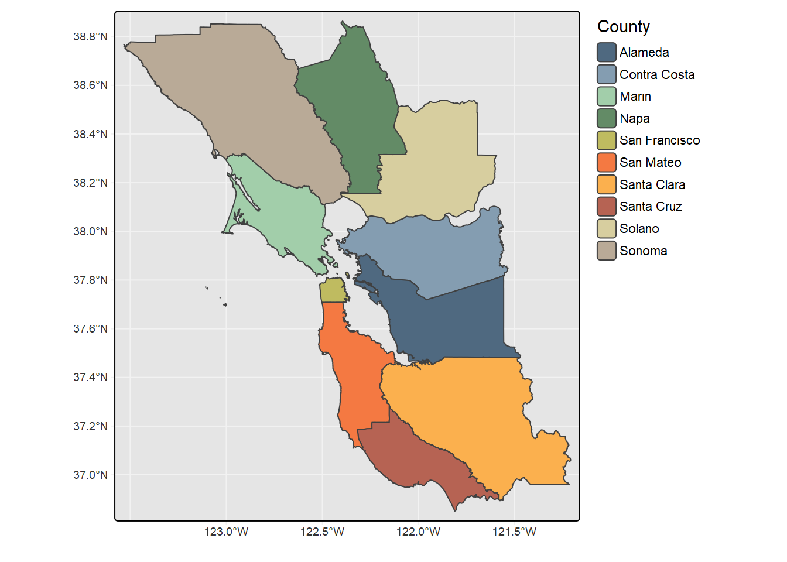
FIGURE 6.24: Categorical Fill
tmap of sierraFeb with hillshade and point symbols
We’ll use a raster hillshade as a basemap using tm_raster, zoom into an area with a bounding box (using tmaptools::bb), include county boundaries with tm_borders, and color station points with temperatures with tm_symbols (Figure 6.25), with the legend positioned within the map frame.
library(tmap); library(sf); library(terra); library(igisci)
library(tmaptools)#; library(cols4all)
hillshCol <- tm_scale_continuous(values = "-brewer.greys")library(terra); library(tidyverse)
tmap_mode("plot")
sierra <- st_as_sf(sierraFeb, coords = c("LONGITUDE", "LATITUDE"), crs = 4326) |>
filter(!is.na(TEMPERATURE))
hillsh <- rast(ex("CA/ca_hillsh_WGS84.tif"))
ct <- st_read(system.file("extdata","sierra/CA_places.shp",package="igisci"))
ct$AREANAME_pad <- paste0(str_replace_all(ct$AREANAME,'[A-Za-z]',' '),ct$AREANAME)
tempScale <- tm_scale_continuous(values="-red_blue_diverging",midpoint=NA)
hillsh <- rast(ex("CA/ca_hillsh_WGS84.tif"))
bounds <- bb(sierra, ext=1.1)mapBase <- tm_graticules(col="azure2", lines=T) +
tm_shape(hillsh, bbox=bounds) +
tm_raster(col.scale=tm_scale_continuous(values="-brewer.greys"),
col.legend = tm_legend(show=F),
col_alpha=0.7) +
tm_shape(st_make_valid(CA_counties)) + tm_borders() +
tm_shape(ct) + tm_dots() + tm_text("AREANAME", size=0.5)
mapBase +
tm_shape(sierra) +
tm_symbols(fill="TEMPERATURE",
fill.scale=tempScale, size=0.8,
fill.legend=tm_legend(" C",reverse=T,frame=F,
position=tm_pos_in("right","top"))) +
tm_title("February Normals")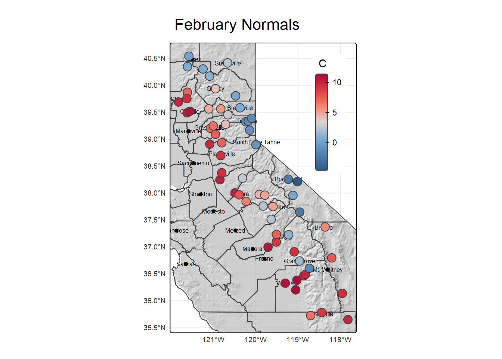
FIGURE 6.25: hillshade, borders and point symbols in tmap
As introduced earlier, note the use of indentation I added for improving the readability of the code, with draw operations indented from the associated tm_shape, and all of the fill options lined up.
6.8.2 Basemap with tmap
In the example above, we created a hillshade basemap that used tm_raster to display as shades of gray. We can also display a color (3-band rgb) image using tm_rgb, including maps for tile basemap servers such as OpenStreetMap accessed with maptiles::get_tiles.
But tmap also provides a bit easier way to access these basemap tiles, using tm_basemap, such as with one of the basemaps served by Esri:
tm_basemap(server = "Esri.WorldTopoMap")
Note that there are many basemaps served you might explore at https://leaflet-extras.github.io/leaflet-providers/preview/index.html. However, not all are supported by tm_basemap, so they may end up blank. Unfortunately, the various USGS basemaps are currently not supported, but the Esri and Open basemaps are generally reliable.
- Esri.WorldTerrain
- Esri.WorldShadedRelief
- Esri.WorldImagery
- Esri.WorldGrayCanvas
- Esri.NatGeoWorldMap
- Esri.OceanBasemap
- OpenStreetMap
- OpenTopoMap
Since tmap uses maptiles, you can also find a list of those supported using ?maptiles::get_tiles however some that are listed don’t work at all zoom levels.
(Figure 6.26)
bounds=bb(CA_counties, ext=1.05)
CA <- tm_basemap("Esri.WorldTerrain") +
tm_shape(CA_counties) + tm_borders(lwd=1, col="red") +
tm_graticules(lines=F,labels.rot=c(0,90)) +
tm_title("CA counties on basemap")
CA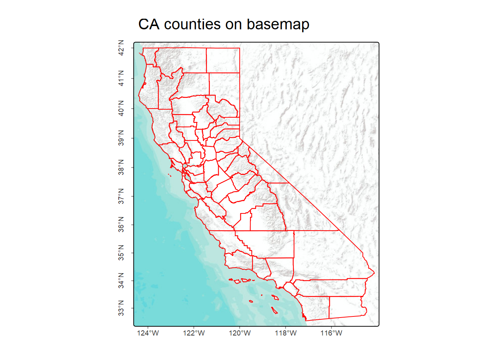
FIGURE 6.26: California counties with a basemap in tmap
If you need labeled features for context, you can try some of the others, including the default OpenStreetMap, but you’ll probably want to choose a specific zoom level that works, and that can be tricky. See https://wiki.openstreetmap.org/wiki/Zoom_levels for information on these; for instance
zoom=7as an option forget_tilesworks pretty well for something at the scale of California.
6.9 Interactive Maps
The word “static” in “static maps” isn’t something you would have heard in a cartography class thirty years ago, since essentially all maps then were static. Very important in designing maps was, and still is, considering your audience and their perception of symbology.
- Figure-to-ground relationships assume “ground” is a white piece of paper (or possibly a standard white background in a pdf), so good cartographic color schemes tend to range from light for low values to dark for high values.
- Scale is fixed, and there are no “tools” for changing scale, so a lot of attention must be paid to providing scale information.
- Similarly, without the ability to see the map at different scales, inset maps are often needed to provide context.
While the purpose of static maps is to communicate information all at once, as a figure in a report or a printed poster, interactive maps are about exploration, having tools for zooming in or out of an area of interest; they’re also always being “printed” on a computer or device where the color of the background isn’t necessarily white. We are increasingly used to using interactive maps on our phones or other devices, where we’re typically in exploratory mode, and often get frustrated not being able to zoom into a static map. However, as we’ll see, there are trade-offs in that interactive maps don’t provide the same level of control on symbology for what we want to put on the map, but instead depend a lot on basemaps for much of the cartographic design, generally limiting the symbology of data being mapped on top of it.
Earlier we looked at static tables where we might optimize the look of the table using tools like
gt::gt. These are analogous to a static map, and for a more exploratory purpose we might instead display a data frame using a tool likeDT::datatablethat allows interactive methods such as scrolling.
6.9.1 Leaflet
We’ll come back to tmap to look at its interactive option, but we should start with a very brief look at the package that it uses when you choose interactive mode: leaflet. The R leaflet library itself translates to Javascript and its Leaflet library, which was designed to support “mobile-friendly interactive maps” (https://leafletjs.com). We’ll also look at another R package that translates to leaflet: mapview.
Interactive maps tend to focus on using basemaps for most of the cartographic design work, and quite a few are available. The only code required to display the basemap is addTiles(), which will display the default OpenStreetMap in the area where you provide any features, typically with addMarkers(). This default basemap is pretty good to use for general purposes, especially in urban areas where OpenStreetMap contributors (including a lot of former students I think) have provided a lot of data.
You can specify additional choices using addProviderTiles(), and use a layers control with the choices provided as baseGroups. You have access to all of the basemap provider names with the vector providers, and to see what they look like in your area, explore http://leaflet-extras.github.io/leaflet-providers/preview/index.html, where you can zoom into an area of interest and select the base map to see how it would look in a given zoom (Figure 6.27).
library(leaflet)
leaflet() %>%
addTiles(group="OpenStreetMap") %>%
addProviderTiles("OpenTopoMap",group="OpenTopoMap") %>%
addProviderTiles("Esri.NatGeoWorldMap",group="Esri.NatGeoWorldMap") %>%
addProviderTiles("Esri.WorldImagery",group="Esri.WorldImagery") %>%
addMarkers(lng=-122.4756, lat=37.72222,
popup="Institute for Geographic Information Science, SFSU") %>%
addLayersControl(
baseGroups = c("OpenStreetMap","OpenTopoMap",
"Esri.WorldImagery","Esri.NatGeoWorldMap"))FIGURE 6.27: Leaflet map showing the location of the SFSU Institute for Geographic Information Science with choices of basemaps
With an interactive map, we do have the advantage of a good choice of base maps and the ability to resize and explore the map, but symbology is more limited, mostly just color and size, with only one variable in a legend. Note that interactive maps display in the Viewer window of RStudio or in R Markdown code output as you see in the html version of this book.
For a lot more information on the leaflet package in R, see:
6.9.2 Mapview
In the mapview package, either mapview or mapView produces perhaps the simplest interactive map display where the view provides the option of changing basemaps, and just a couple of options make it a pretty useful system for visualizing point data. So for environmental work involving samples, it is a pretty useful exploratory tool.
6.9.3 tmap (view mode)
You can change to an interactive mode with tmap by using tmap_mode("view") so you might think that you can do all the great things that tmap does in normal plot mode here, but as we’ve seen, interactive maps don’t provide the same level of symbology. The view mode of tmap, like mapview, is just a wrapper around leaflet, so we’ll focus on the latter. The key parameter needed is tmap_mode, which must be set to "view" to create an interactive map.
library(tmap); library(sf); library(tmaptools); library(tidyverse)
tmap_mode("view")
sierra <- st_as_sf(sierraFeb, coords = c("LONGITUDE", "LATITUDE"), crs = 4326) |>
filter(!is.na(TEMPERATURE))
bounds <- bb(sierra, ext=1.1)
tempCol <- tm_scale_continuous(values = "-brewer.RdBu")sierraMap <- tm_basemap(leaflet::providers$Esri.NatGeoWorldMap) +
tm_shape(sierra) +
tm_dots(fill="TEMPERATURE",
fill.scale=tempCol,
fill.legend=tm_legend(position=tm_pos_in("right","top")),
fill_alpha = 0.66,
size=0.5)
tmap_leaflet(sierraMap, show=TRUE)One nice feature of tmap view mode (and mapview) is the ability to select the basemap interactively using the layers symbol. There are lots of basemap available with leaflet (and thus with tmap view). To explore them, see http://leaflet-extras.github.io/leaflet-providers/preview/index.html but recognize that not all of these will work everywhere; many are highly localized or may only work at certain scales.
The following map using tmap could presumably be coded in leaflet, but tmap makes it a lot easier. We’ll use it to demonstrate picking the basemap, which really can help in communicating our data with context (Figure 6.28).
library(sf); library(tmap); library(igisci); library(tidyverse)
soilCO2 <- st_read(ex("marbles/co2july95.shp"))
geology <- st_read(ex("marbles/geology.shp")) |> rename(Geology=CLASS) tmap_mode = "view"
map <- tm_basemap(server=c(Topo="OpenTopoMap",
NatGeo="Esri.NatGeoWorldMap",
Imagery = "Esri.WorldImagery")) +
tm_shape(geology) +
tm_polygons(fill="Geology", fill_alpha=0.5) +
tm_shape(soilCO2) +
tm_symbols(fill="CO2_",
fill.scale = tm_scale_continuous())
tmap_leaflet(map,show=TRUE)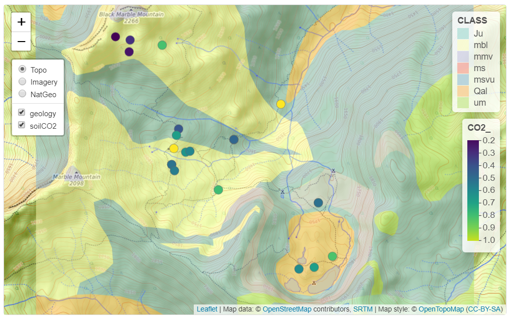
FIGURE 6.28: View (interactive) mode of tmap with selection of basemaps
6.9.4 Interactive mapping of individual penguins abstracted from a big dataset
In a study of spatial foraging patterns by Adélie penguins (Pygoscelis adeliae), Ballard et al. (2019) collected data over five austral summer seasons (parts of December and January in 2005-06, 2006-07, 2007-08, 2008-09, 2012-13) period using SPLASH tags that combine Argos satellite tracking with a time-depth recorder, with 11,192 observations. The 24 SPLASH tags were re-used over the period of the project with a total of 162 individual breeding penguins, each active over a single season.
Our code takes advantage of the abstraction capabilities of base R and dplyr to select an individual penguin from the large data set and prepare its variables for useful display. Then the interactive mode of tmap works well for visualizing the penguin data – both the cloud of all observations and the focused individual – since we can zoom in to see the locations in context, and basemaps can be chosen. The tmap code colors the individual penguin’s locations based on a decimal day derived from day and time. While interactive view is more limited in options, it does at least support a legend and title (Figure 6.29).
library(sf); library(tmap); library(tidyverse); library(igisci);
sat_table <- read_csv(ex("penguins/sat_table_splash.csv"))
obs <- st_as_sf(filter(sat_table,include==1), coords=c("lon","lat"), crs=4326)
uniq_ids <- unique(obs$uniq_id) # uniq_id identifies an individual penguin
onebird <- obs %>%
filter(uniq_id==uniq_ids[sample.int(length(uniq_ids), size=1)]) %>%
mutate(decimalDay = as.numeric(day) + as.numeric(hour)/24)
tmap_mode = "view"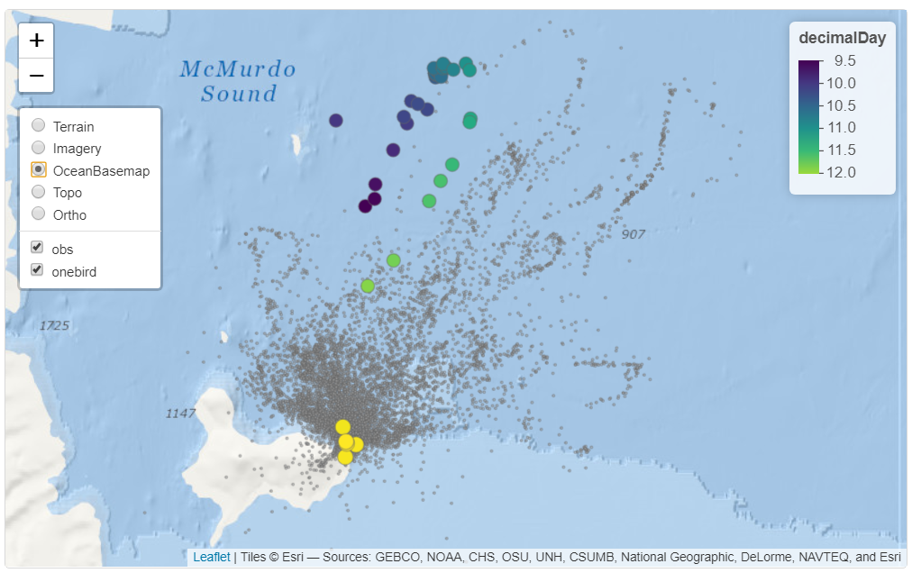
FIGURE 6.29: Observations of Adélie penguin migration from a 5-season study of a large colony at Ross Island in the SW Ross Sea, Antarctica; and an individual – H36CROZ0708 – from season 0708. Data source: Ballard et al. (2019). Fine-scale oceanographic features characterizing successful Adélie penguin foraging in the SW Ross Sea. Marine Ecology Progress Series 608:263-277.
Some final thoughts on maps and plotting/viewing packages: There’s a lot more to creating maps from spatial data, but we need to look at spatial analysis to create some products that we might want to create maps from. In the next chapter, in addition to looking at spatial analysis methods we’ll also continue our exploration of map design, ranging from very simple exploratory outputs to more carefully designed products for sharing with others.
6.10 Exercises: Spatial Data and Maps
Project preparation: Create a new RStudio project, and name it “Spatial”. We’re going to use this for data we create and new data we want to bring in. We’ll still be reading in data from the data package, but working in this project we’ll be getting used to (a) working with our own data and (b) storing data to be used for later projects. Once we’ve created the project, we’ll want to create a data folder to store data in. This code should do this:
Exercise 6.1 Using the method of building simple sf geometries, build a simple \(1\times1\) square object and plot it. Remember that you have to close the polygon, so the first vertex is the same as the last (of 5) vertices.
Exercise 6.2 Build a map in ggplot of Colorado, Wyoming, and Utah with these boundary vertices in GCS. As with the square, remember to close each figure, and assign the crs to what is needed for GCS: 4326.
- Colorado: (-109,41),(-102,41),(-102,37),(-109,37)
- Wyoming: (-111,45),(-104,45),(-104,41),(-111,41)
- Utah: (-114,42),(-111,42),(-111,41),(-109,41),(-109,37),(-114,37)
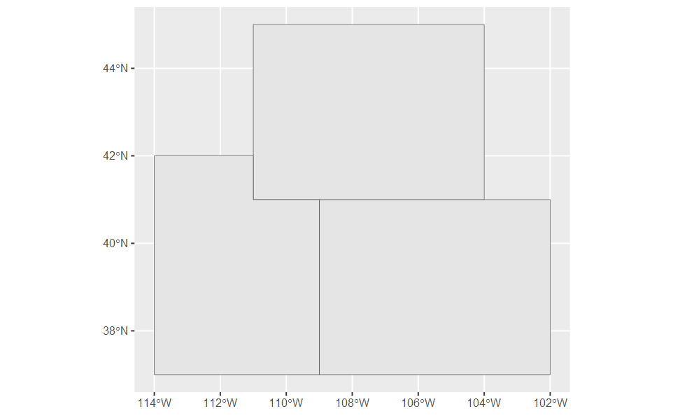
Exercise 6.3 Add in the code for other western states and create kind of a western US map. Go ahead and use the following code:
AZ <- st_polygon(list(rbind(c(-114,37),c(-109,37),c(-109,31.3),c(-111,31.3),
c(-114.8,32.5),c(-114.6,32.7),c(-114.1,34.3),c(-114.5,35),
c(-114.5,36),c(-114,36),c(-114,37))))
NM <- st_polygon(list(rbind(c(-109,37),c(-103,37),c(-103,32),c(-106.6,32),
c(-106.5,31.8),c(-108.2,31.8),c(-108.2,31.3),c(-109,31.3),c(-109,37))))
CA <- st_polygon(list(rbind(c(-124,42),c(-120,42),c(-120,39),c(-114.5,35),
c(-114.1,34.3),c(-114.6,32.7),c(-117,32.5),c(-118.5,34),c(-120.5,34.5),
c(-122,36.5),c(-121.8,36.8),c(-122,37),c(-122.4,37.3),c(-122.5,37.8),
c(-123,38),c(-123.7,39),c(-124,40),c(-124.4,40.5),c(-124,41),c(-124,42))))
NV <- st_polygon(list(rbind(c(-120,42),c(-114,42),c(-114,36),c(-114.5,36),
c(-114.5,35),c(-120,39),c(-120,42))))
OR <- st_polygon(list(rbind(c(-124,42),c(-124.5,43),
c(-124,46),c(-123,46),c(-122.7,45.5),c(-119,46),c(-117,46),
c(-116.5,45.5),c(-117.2,44.5),c(-117,44),
c(-117,42),c(-120,42),c(-124,42))))
WA <- st_polygon(list(rbind(c(-124,46),c(-124.8,48.4),c(-123,48),
c(-123,49),c(-117,49),
c(-117,46),c(-119,46),c(-122.7,45.5),c(-123,46),c(-124,46))))
ID <- st_polygon(list(rbind(c(-117,49),
c(-116,49),c(-116,48),c(-114.4,46.5),c(-114.4,45.5),
c(-114,45.6),c(-113,44.5),c(-111,44.5),
c(-111,42),c(-114,42),c(-117,42),
c(-117,44),c(-117.2,44.5),c(-116.5,45.5),
c(-117,46),c(-117,49))))
MT <- st_polygon(list(rbind(c(-116,49),c(-104,49),
c(-104,45),c(-111,45),
c(-111,44.5),c(-113,44.5),c(-114,45.6),c(-114.4,45.5),
c(-114.4,46.5),c(-116,48),c(-116,49))))Then build sfcWestStates from these geometries using the methods in 6.1.1.2, specifying GCS (4326) as the crs, and plot with methods from 6.6.
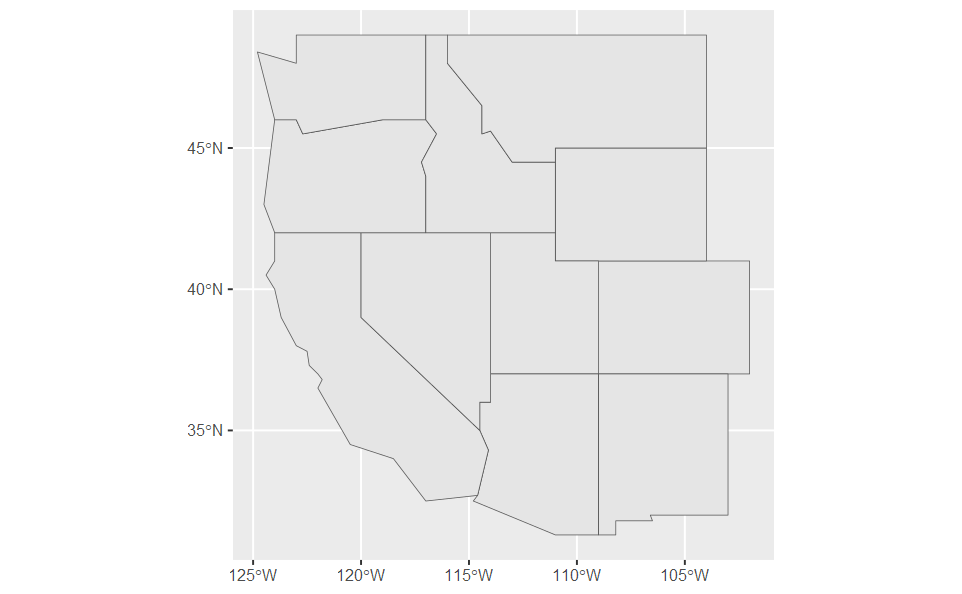
Exercise 6.4 Create western states using methods from 6.1.1.3, adding the fields name, abb, area_sqkm, and population, and create a map labeling with the name. Note that the added fields need to be in the same order as the boundaries created above. Also remember to make the area and pop variables numeric, which will happen if they’re brought in as a vector along with character variables. Apply methods from 6.6 and references on R color systems to get higher values shaded darker, to follow cartographic figure-ground contrast convention.
- Colorado, CO, 269837, 5758736
- Wyoming, WY, 253600, 578759
- Utah, UT, 84899, 3205958
- Arizona, AZ, 295234, 7278717
- New Mexico, NM, 314917, 2096829
- California, CA, 423970, 39368078
- Nevada, NV, 286382, 3080156
- Oregon, OR, 254806, 4237256
- Washington, WA, 184827, 7705281
- Idaho, ID, 216443, 1839106
- Montana, MT, 380800, 1085407
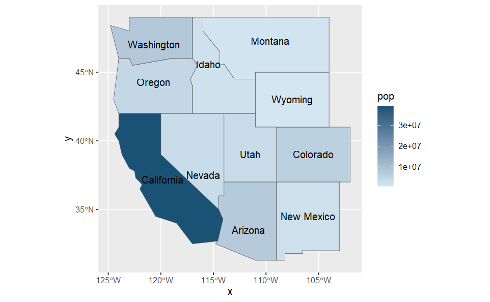
Exercise 6.5 Store the W_States as a shape file in the data folder with st_write. (Look up how to use st_write with ?st_write – it’s pretty simple.) Note that this will fail if it already exists, so include the parameter delete_layer = TRUE to allow overwrite.
Exercise 6.6 Highest Peaks: Create a tibble for the highest peaks in the western states, with the following names, elevations in m, longitude and latitude, use methods from 6.1.2 to create spatial data from it, and add them to that map. Then write the shapefile out again as “data/peaks.shp” again allowing overwriting.
- Wheeler Peak, 4011, -105.4, 36.5
- Mt. Whitney, 4421, -118.2, 36.5
- Boundary Peak, 4007, -118.35, 37.9
- Kings Peak, 4120, -110.3, 40.8
- Gannett Peak, 4209, -109, 43.2
- Mt. Elbert, 4401, -106.4, 39.1
- Humphreys Peak, 3852, -111.7, 35.4
- Mt. Hood, 3428, -121.7, 45.4
- Mt. Rainier, 4392, -121.8, 46.9
- Borah Peak, 3859, -113.8, 44.1
- Granite Peak, 3903, -109.8, 45.1
Note: the easiest way to do this is with the method in 3.2.2, using the above data.
And finally create a map showing peaks labeled and the states filled based on area. Use cartographic methods from either 6.6 or 6.8.
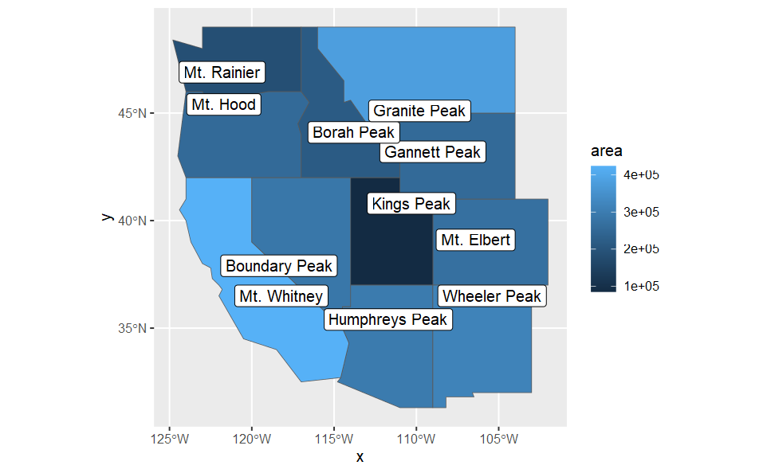
Exercise 6.7 California freeways. From the CA_counties and CAfreeways feature data in igisci, make a simple map (using methods from 6.6), with freeways colored red.
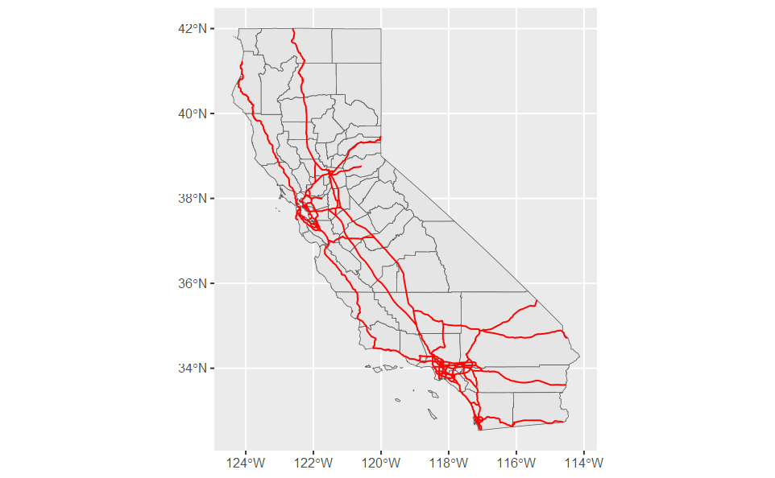
Exercise 6.8 After adding the terra library, create a raster from the built-in volcano matrix of elevations from Auckland’s Maunga Whau Volcano, and use plot() to display it. We’d do more with that dataset, but we don’t know what the cell size is.
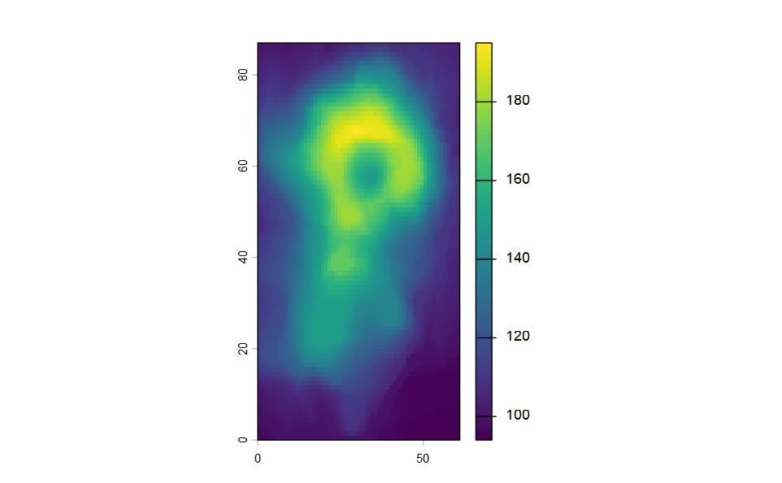
Exercise 6.9 Western States tmap: Use tmap to create a map from the W_States (polygons) and peaksp (points) data we created earlier. Include a basemap with no labels (I’ve used “CartoDB.VoyagerNoLabels” and Esri.WorldShadedRelief”). Hints: you’ll want to use tm_text with text set to “peak” to label the points. Use this as an opportunity to test the geospatial data you’ve written earlier by using methods from 6.1.4 to read them. Experiment with tm_symbol sizes, xmod, and ymod settings with tm_text. A tm_text option we haven’t used before is to left-justify text by including options=opt_tm_text(just="left")
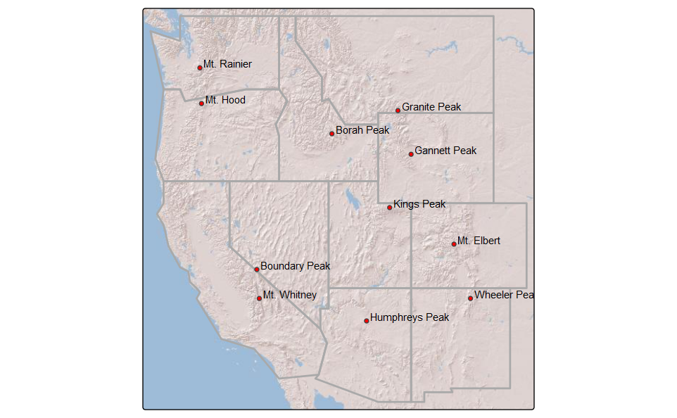
Exercise 6.10 tmap view mode. Also using the western states data, create a similar tmap in view mode, but setting the basemap server to "Esri.WorldImagery".
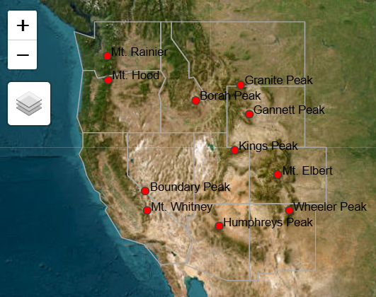